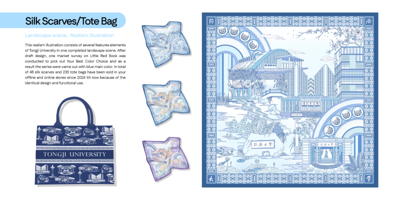

2022
Tongji Impression
Graphic Design
This realism illustration consists of several features elements of Tongji University in one completed landscape scene. After draft design, one market survey on Little Red Book was conducted to pick out Your Best Color Choice and as a result the series were came out with blue main color. In total of 48 silk scarves and 235 tote bags have been sold in your offline and online stores since 2024 till now because of the identical design and functional use.
